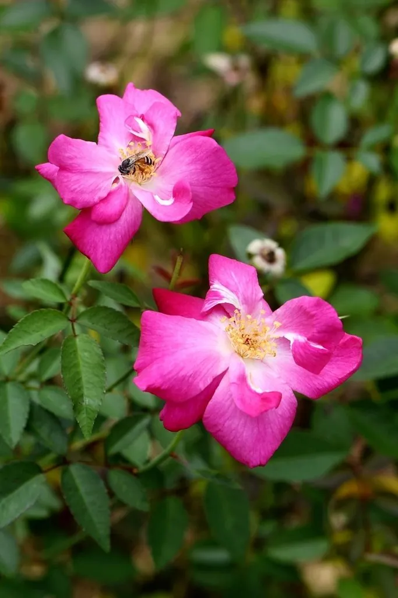

灌木与花木 · 植物界
月季 Rosa chinensis

中国原产的常绿或半常绿灌木，花期长、品种繁多，是世界月季育种的重要亲本，被誉为“花中皇后”。
- 分类
- 门被子植物门纲木兰纲目蔷薇目科蔷薇科属蔷薇属
- 栖息环境
- 海拔 1000 米以下的向阳山坡、灌丛与庭院，喜光喜温暖
- 地理分布
- 原产中国中部及西南部，全国各地广泛栽培，世界各地亦有引种
- 保护级别
- 暂无评估；中国未列入国家重点保护野生植物名录
物种志
月季为常绿或半常绿灌木，高可达 2 m，茎直立或蔓生，小枝上生有弯曲的皮刺；奇数羽状复叶，小叶 3–5 枚，宽卵形，边缘具锐锯齿，叶面光亮。花单生或数朵簇生于枝顶，花径 4–10 cm，有红、粉、白、黄、紫等色，重瓣或半重瓣，多数具香气；蔷薇果卵圆形，成熟时橙红色。
月季原产中国，栽培历史逾两千年，喜光、喜温暖，耐寒性因品种而异，适宜疏松肥沃、排水良好的微酸性土壤。月季花期极长，在适宜条件下可四季开花，故有“月月红”之称；18 世纪中国月季传入欧洲，与当地蔷薇杂交育成现代月季，成为世界最重要的观赏花卉之一。花可提取香精、制花茶，根与叶可入药，月季也是北京、天津等城市的市花。
形态与习性
- 株高可达 2 m，茎上具弯曲皮刺
- 花期4–10 月，温暖地区可全年开花
- 果期9–11 月，蔷薇果橙红色
- 光照喜光，每天需 6 小时以上日照
- 水分喜湿润，忌积水
- 土壤微酸性、疏松肥沃的壤土
- 主要用途观赏花卉、提取香精、花茶与药用
趣味知识
- 月季在适宜条件下可四季开花，因此被称为“月月红”。
- 18 世纪中国月季传入欧洲，与现代月季的育种关系密切。
- 月季与玫瑰外形相似，但月季叶片光滑、刺较稀疏，玫瑰叶片皱缩、香气更浓。
- 月季是北京、天津等城市的市花，也是世界栽培最广的观赏花卉之一。